Final Research Question Figures
00_assumption_validation_main_metrics.png
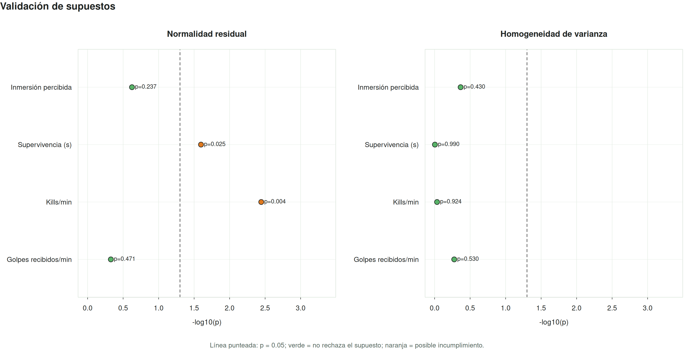
00_art_factorial_main_metrics.png
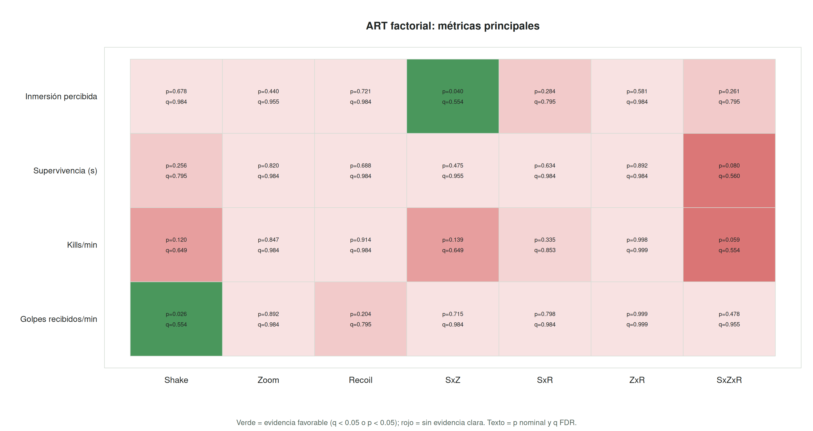
RQ1_immersion_giq_effects.png
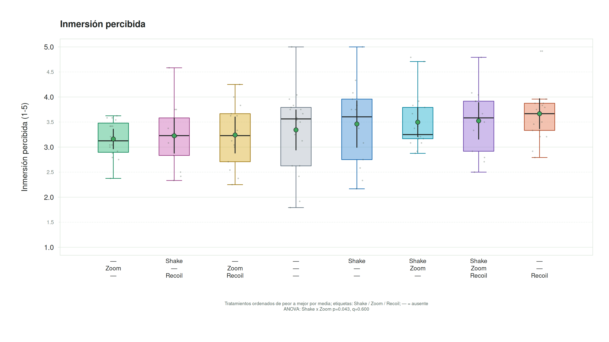
RQ1_immersion_vs_control_forest.png
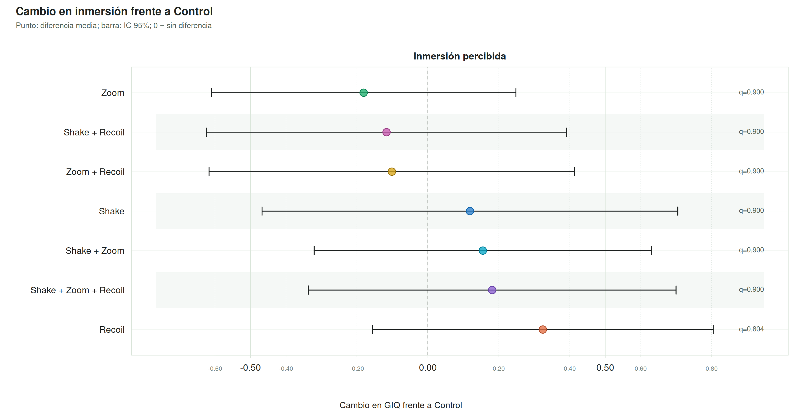
RQ2_kills_per_min.png
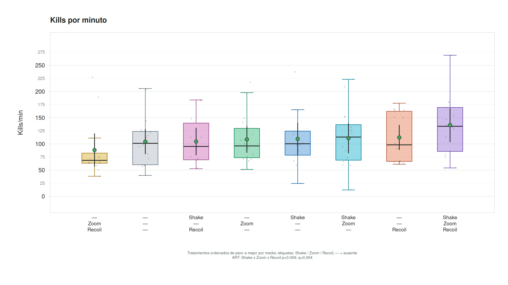
RQ2_hits_per_min.png
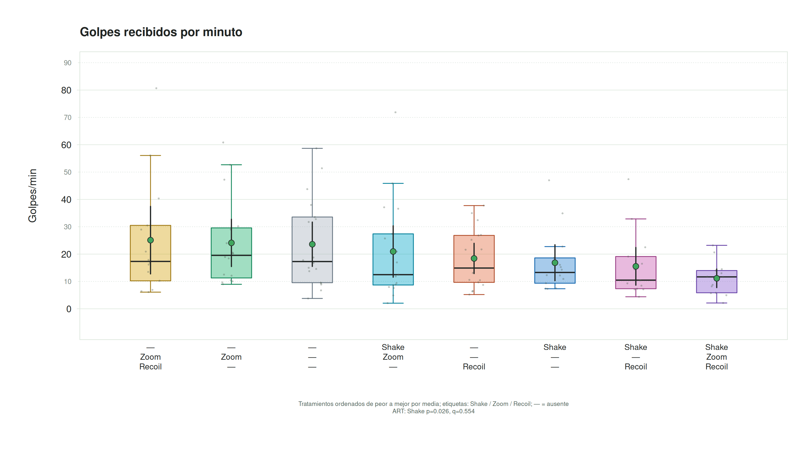
RQ2_performance_effects_directional_forest.png
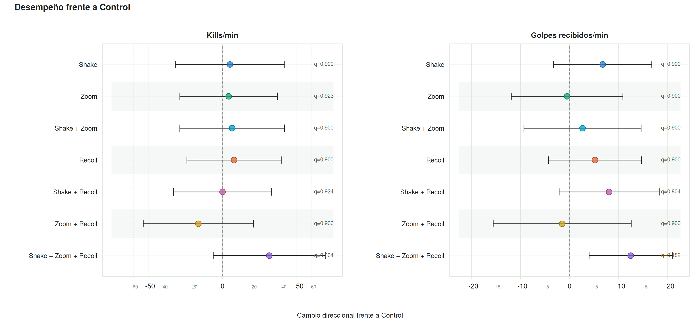
RQ2_count_models_duration_offset.png
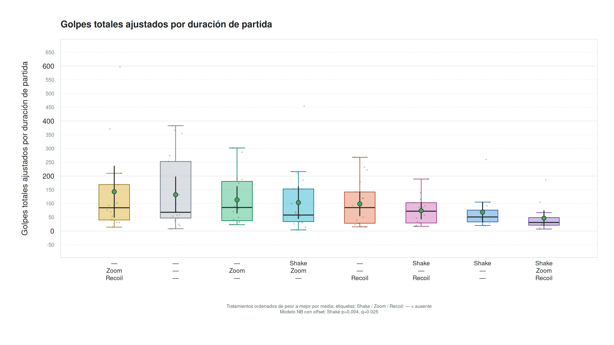
RQ2_count_model_rate_ratios.png
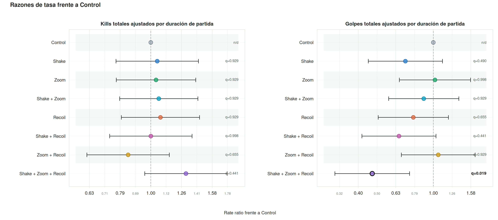
RQ2_survival_time_context.png
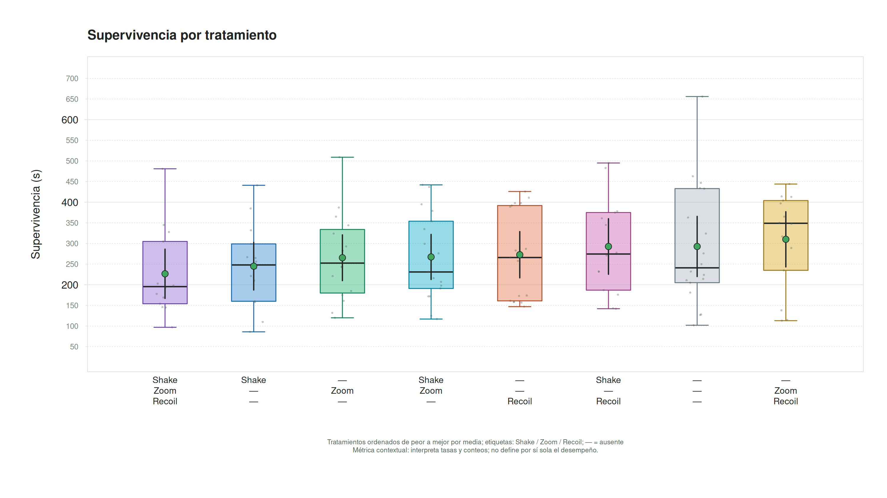
RQ3_immersion_vs_control_forest.png
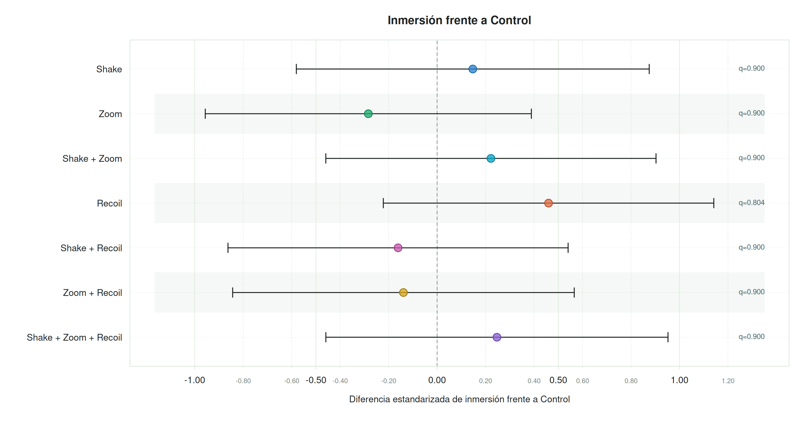
RQ3_hits_vs_control_forest.png
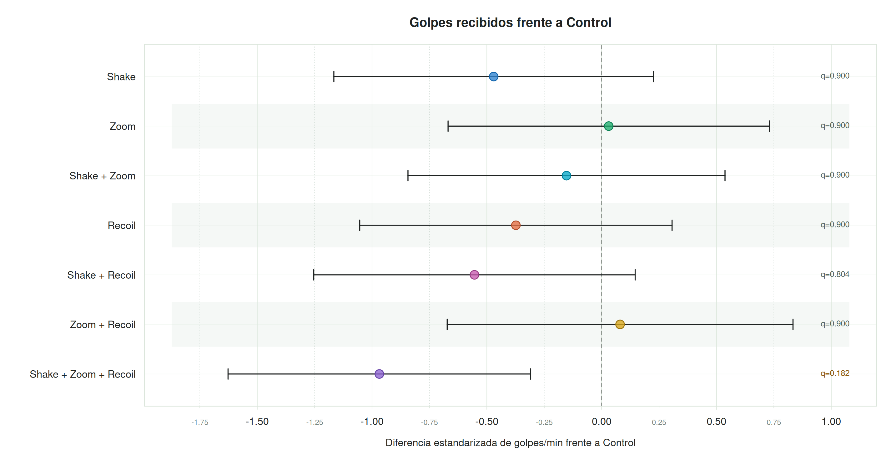
RQ3_immersion_hits_tradeoff_quadrants.png
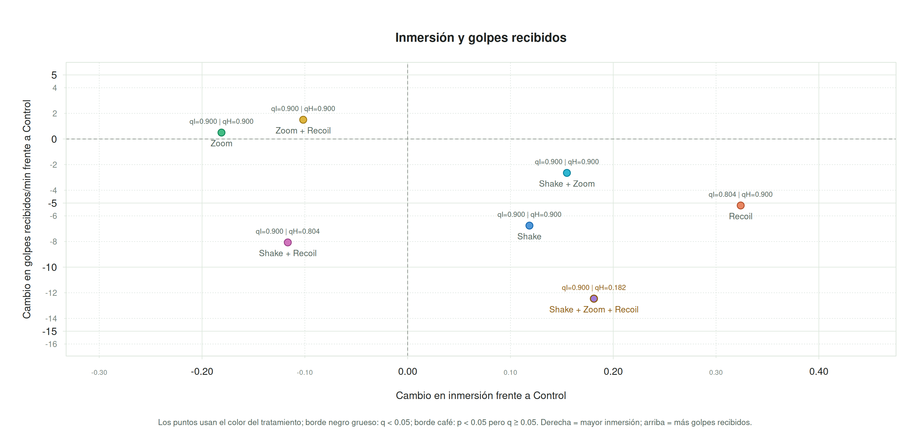
RQ3_giq_performance_correlation.png
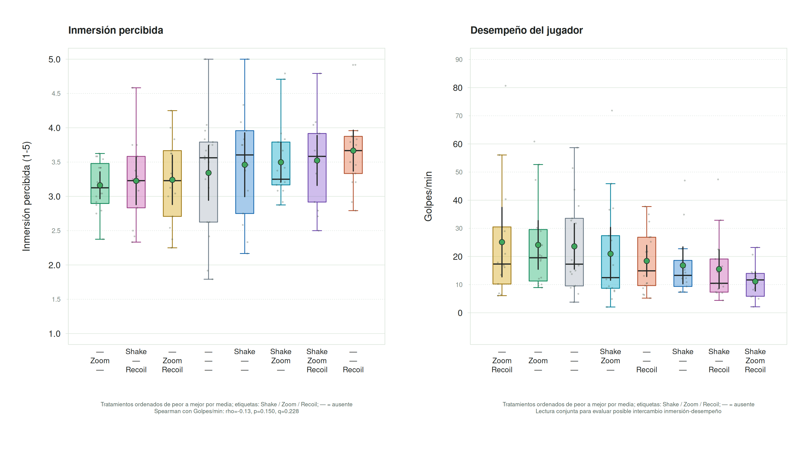